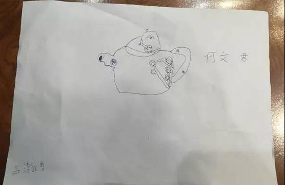
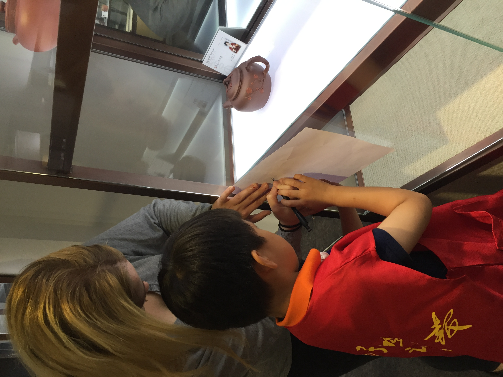
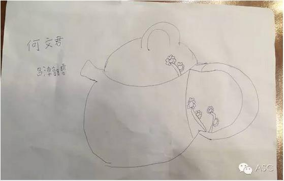
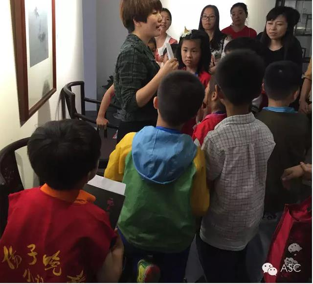
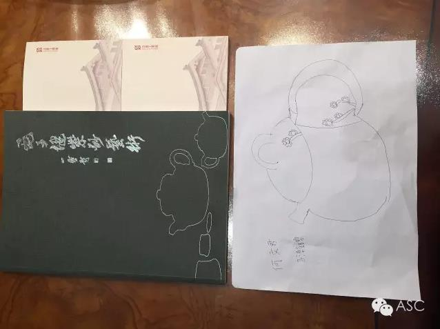
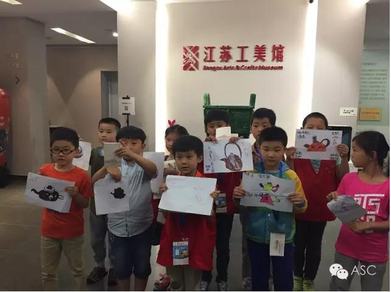

互惠动态
|
|
互惠生，你所不知道的另一面！
关于互惠生，大家的了解不一定比我少，但是今天我想给大家分享一个故事。我们是个简单的四口之家，孩子的爸爸、7岁的儿子、5岁的女儿和我~当然，现在我们有了个新成员，漂亮的姐姐Dona！
Dona是我们家请的互惠生，来自荷兰。她是一个非常聪明，有耐心，而且很认真的姑娘。尤其是她的耐心，身为妈妈的我自叹不如！前不久的一次绘画活动上，她的一切举动让我至今记忆犹新......
初次画紫砂壶，因担心失败，儿子不敢尝试！
周末，带着儿子和Dona一起去了江苏工美馆参加活动。活动当天，老师给孩子们出的“画紫砂壶”题目，并提醒小朋友们要注意构图。也将会在十五位小朋友中选出三张优秀作品，并奖励一本大师的作品集。这是儿子第一次画紫砂壶，让他有点不知所措。由于担心画不好，儿子迟迟不敢下笔。但看着身边的小朋友都在认真画画，他也就硬着头皮画了起来。

儿子第一张，其实就紫砂壶小了点，其他都不错的~~~
由于儿子用的是圆珠笔画的，不能用橡皮去擦，只能一气呵成的画完。紫砂壶画完了之后，从整体看，倒是挺像，就是太小，大概就占画面的1/6，另外，线条也是弯曲的。看着自己的画，再看看别的小朋友的作品，儿子很不满意自己的画。所以他决定给自己第二次机会，可又不知怎么下手，一直不敢动笔，这时他把求助的眼光投向了Dona！
在Dona的耐心引导下，儿子重新画了紫砂壶！
儿子看了一眼Dona，Dona马上就会意了，走到儿子面前，并蹲下来跟儿子讲：“You are so great, but I believe you will do better! Let us work together”
“恩！”儿子用力的点点头回答道。
这个时候，儿子显然比第一次画的时候大胆自信了，拿起笔轻松地画了起来。在整个过程中，儿子还总是提出一些在我看来很可笑的问题，但Dona总是很认真、很耐心的指导及解答，还时不时给他鼓励与赞扬。换做是我，我很可能很不耐烦，或许就责备儿子了：你这个画的不对，应该那样画；你怎么这么胆小，受点挫折就放弃；你下次再这样，妈妈就拒绝回答你的问题了......

Dona正耐心帮助儿子画画，像不像姐弟俩，哈哈~~
而Dona在面对儿子的不自信与烦躁的时候，她会进行积极地去引导，首先肯定儿子的能力，然后帮他分析第一张画美中不足的原因以及解决的问题方法，最后鼓励他积极地去面对，学会控制自己的情绪，让他充满自信。无论孩子，还是中国的大人，我觉得Dona这种处事方法值得我们学习。
重新画出紫砂壶，受到老师表扬，儿子乐开怀！
在Dona的帮助下，儿子很快完成了这次的画画。在收笔的那一刻，儿子兴奋地跑过来，并高高举起手中的画说道：“妈妈，你看，这次画的紫砂壶是不是很棒！”
“是的，宝贝！”我肯定地回答道。

儿子与Dona一起完成的作品，是不是很大气，嘿嘿~~
随后，儿子就赶紧排队交作业。收齐作业后，老师将小朋友们的画进行了详细讲评。在讲评儿子作品时，美术老师狠狠地表扬了儿子：“由于胆小、害怕，这位小朋友第一幅画的构图很小，这让他很不满意。后来，他给了自己第二次机会，而这第二幅画，他画的很大胆，线条简洁，这是种概括能力，也是孩子身上的优点。此外，我还要提醒各位家长，我们在孩子画画时，千万别一味用橡皮擦去孩子画的线条，将自己看到的东西强加到孩子的画中，这会让孩子越来越没自信！所以，给小朋友的自信一个掌声，并赠送《毛子健紫砂藝術》第三本作品集作为鼓励。”

老师正在表扬我儿子，哈哈~~~~
话音刚落，一阵热烈掌声随之而来，而当时儿子的眼睛笑成了一条缝！自那以后，儿子变了，变的更加自信了，遇事不再胆怯，而是积极主动找出问题所在，然后有效地去解决。这一切都源于Dona的帮助，真心感谢她！也让我认识到孩子是需要多鼓励的，更需要耐心去引导。


最后所有小朋友作品合影，哈哈，我儿子很帅有木有~~~
当然，Dona让我感触很深的事儿还有很多，如：再大的事儿，都要微笑面对；再小的事儿，都要提前认真准备，尽力做到最完美；她也非常的努力勤奋，你可知道，两年后，她将是一名优秀的8-12岁年龄阶段的荷兰小学全科老师。
通过这件事，作为孩子的妈妈，我体会很深，从当初纠结犹豫要不要请互惠生，到现在非常满意自己请的互惠生Dona。这不仅是Dona陪家里的孩子练习了外语，更重要的是她的优秀品质，给孩子做了个很好的榜样，在潜移默化中影响着孩子，塑造孩子更加完善的性格。所以，咱们找个互惠生不要只带有帮助孩子学习外语这样的功利心，在与互惠生相处的过程中，你会发现他们不一样的一面。
关于ASC
暑假来，开心来，你的暑假有计划了吗？你还在为外语作业而发愁吗？你想请个欧美的哥哥姐姐陪你 do homework 吗？那么，加入我们ASC吧！我们把国外的互惠生请来家庭里，照顾自家的孩子，从小培养外文的语言环境，为孩子出国，全家移民打下优良的基础。你还在等什么？机会难得，名额有限，我们的服务更是面向全国家庭哦！
上海中心：
Tel: 86-21-61116069
南京中心：
Tel: 86-25-66065662
手机：15601666586
（可加微信）
Q Q：3259637585
微信：asc-center
邮箱：info@asc-center.com
网站：www.asc-aupair.com